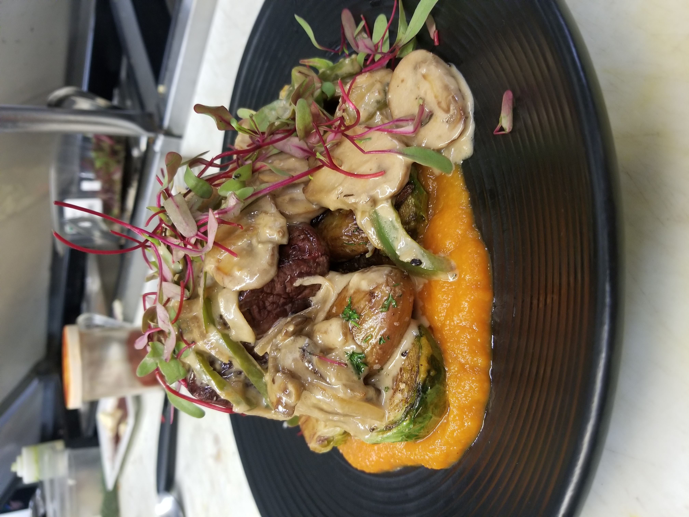

About GhostWrite Studios
Stories deserve more than ideas. They deserve the time, discipline, and stubborn determination required to bring them to life.

From the Kitchen to the Page
Before GhostWrite Studios existed, I spent years working as a chef. The kitchen demanded nearly everything I had: long hours, constant pressure, physical exhaustion, and the expectation that work would always come first.
As a divorced workaholic, I became accustomed to measuring life in shifts, deadlines, and responsibilities. I knew how to keep moving, solve problems under pressure, and build something worthwhile from whatever was available. What I did not have was much time left for a life outside of work.
The kitchen taught me discipline, leadership, improvisation, and the importance of execution. An idea means very little if no one is willing to endure the difficult work required to make it real. Those lessons eventually followed me out of the kitchen and into writing.
The Decision
The direction of my life changed when I adopted my dog, Baldur.
I did not want to spend his life working for the right to feed him. I wanted to actually be there for it.
Baldur gave me a reason to reconsider what I was building, what I was sacrificing, and what kind of life I wanted us to share. I began pursuing a career in screenwriting and ghostwriting, turning the same discipline I had carried through years in professional kitchens toward storytelling.
Writing offered something the kitchen never could: the opportunity to build a career around creativity while still being present for the life happening beside me.

The Birth of GhostWrite
GhostWrite began with a focus on screenwriting and ghostwriting: helping clients shape their ideas, discover the strongest version of their stories, and transform creative concepts into finished work.
Ghostwriting is not about replacing a creator's voice. It is about listening closely enough to understand that voice, strengthening what is already there, and helping the creator bring their vision into the light.
That remains one of the central purposes of GhostWrite Studios. Whether the project is a screenplay, story, original concept, or developing intellectual property, the goal is to protect the heart of the idea while giving it the structure and attention it needs to become real.
Becoming GhostWrite Studios
Everything expanded when the concept for Genome: Apex Shifting came to light.
Genome was more than a writing project. It was a complete original world with its own mythology, ecosystems, characters, mechanics, artwork, and potential to grow across multiple forms of media.
As Genome developed, GhostWrite became GhostWrite Studios: an independent intellectual property studio dedicated to creating original worlds while continuing to support the creative work of clients.
GhostWrite Studios exists at the intersection of storytelling, worldbuilding, game development, screenwriting, and creative collaboration. It is a home for original projects and a place where other creators can receive the help necessary to bring their own work forward.
Our Purpose
GhostWrite Studios is built around a simple belief: meaningful creative work should not remain trapped inside someone's head.
We develop original intellectual properties, beginning with Genome: Apex Shifting, while maintaining a continued focus on ghostwriting, screenwriting, storytelling, and helping clients bring their creative work to light.
Every project begins with an idea. The work is giving that idea a voice, a structure, and a life beyond the person who first imagined it.